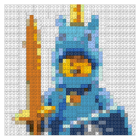
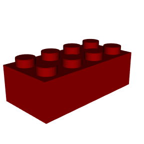
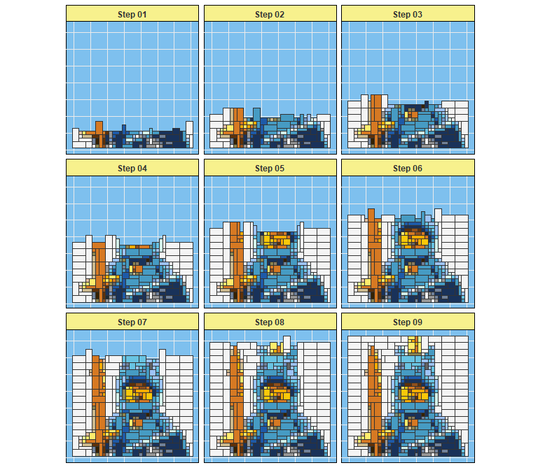

brickr 
Overview
brickr is a package for bringing the LEGO® experience into the R and tidyverse ecosystem.
The package is divided into 2 systems:
- Mosaics: Convert image files into mosaics that could be built using LEGO bricks.
- 3D Models: Build 3D LEGO models from data tables using rgl.
brickr also includes tools help users create the Mosaics and 3D model output using real LEGO elements.
Check out brickr.org for more detail!
What’s the point?
The goal of brickr is to provide a series of tools to integrate the LEGO system with R by:
- Enhancing a real world building experience with mosaics, generated instructions, and piece counts.
- Generating interest in R and coding for new audiences with easy-to-create 3D models.
- Embracing pure novelty.
brickr is developed under the Fair Play policy using publicly available information about LEGO products. brickr is not affiliated with The LEGO Group.
Mosaics
The mosaic functions renders an imported JPG or PNG file using LEGO colors and bricks.
demo_img = tempfile()
download.file("http://ryantimpe.com/files/mf_unicorn.PNG", demo_img, mode="wb")
mosaic1 <- png::readPNG(demo_img) %>%
image_to_mosaic(img_size = 36) #Length of each side of mosaic in "bricks"
#Plot 2D mosaic
mosaic1 %>% build_mosaic()
In general, any brickr function that begins with build_ generates a graphical output from a brickr list object, generated from other functions.
Customization
image_to_mosaic() can take a few important arguments. See ?image_to_mosaic() for full detail.
img_sizeProviding a single value, such as48, crops the image to a square. Inputting a 2-element array,c(56, 48), will output a rectangular image ofc(width, height).color_table&color_paletteOptions to limit the color of bricks used in mosaics, as not all colors produced by LEGO are readily available. Setcolor_paletteto ‘universal’ orc('universal', 'generic')to limit colors to the most common ones. Use a subset of the data framelego_colorsas thecolor_tableto specify a custom palette.methodTechnique used to map image colors into the allowed brick colors. Defaults to ‘cie94`, but other options include ’cie2000’ and ‘euclidean’. Also includes the option ‘brickr_classic’, used in previous version of the package.
3D Models
The bricks_from_* series of functions creates 3D models of LEGO bricks from a variety of input formats.
bricks_from_table()&bricks_from_excel()convert a matrix-shaped table of integers into LEGO bricks. For simple models, this table can be made manually usingdata.frame()ortibble::tribble(). For more advanced models, it’s recommended you use MS Excel or a .csv file. The left-most column in the table is associated with the Level or z-axis of the model.bricks_from_excel()is a wrapper function to more easily build models designed using a Microsoft Excel template. Please see this repo: brickr toybox.bricks_from_coords()takes a data frame withx,y, &zinteger values, andColorcolumns, where each combination of x, y, & z is a point in 3-dimensional space. Color must be an official LEGO color name frombuild_colors(). This format is much more flexible thanbricks_from_table()and allows the programmatic development of 3D models. For other options, see the “Piece type in 3D Models” vignette.bricks_from_mosaic()converts a 2D mosaic object from an image into 3D LEGO models, respectively.
Pass the output from any bricks_from_*() function to build_bricks() to see the 3D model. Models are rendered in rgl.
library(brickr)
#This is a brick
brick <- data.frame(
Level="A",
X1 = rep(3,4), #The number 3 is the brickrID for 'bright red'
X2 = rep(3,4)
)
brick %>%
bricks_from_table() %>%
build_bricks()
#Rotate the default view for a better snapshot
rgl::par3d(userMatrix = rgl::rotate3d(rgl::par3d("userMatrix"), 0.75*pi, 0, 0 ,1))
Stacking bricks
The Level column in the input table determines the elevation of the bricks. bricks_from_table() will convert alphanumeric levels into a z coordinate.
For larger models, use tibble::tribble() to more easily visualize the model. For very large models, use a csv or Excel.
my_first_model <- tibble::tribble(
~Level, ~X1, ~X2, ~X3, ~x4, ~x5, ~X6, ~x7, ~x8,
"A", 1, 1, 1, 0, 1, 1, 1, 1,
"A", 1, 0, 0, 0, 0, 0, 0, 1,
"A", 1, 0, 0, 0, 0, 0, 0, 1,
"A", 1, 1, 1, 1, 1, 1, 1, 1,
"B", 1, 0, 1, 0, 1, 1, 0, 1,
"B", 1, 0, 0, 0, 0, 0, 0, 1,
"B", 1, 0, 0, 0, 0, 0, 0, 1,
"B", 1, 0, 1, 0, 0, 1, 0, 1,
"C", 1, 1, 1, 1, 1, 1, 1, 1,
"C", 1, 0, 0, 0, 0, 0, 0, 1,
"C", 1, 0, 0, 0, 0, 0, 0, 1,
"C", 1, 1, 1, 1, 1, 1, 1, 1,
"D", 2, 2, 2, 2, 2, 2, 2, 2,
"D", 1, 0, 0, 0, 0, 0, 0, 1,
"D", 1, 0, 0, 0, 0, 0, 0, 1,
"D", 2, 2, 2, 2, 2, 2, 2, 2,
"E", 0, 0, 0, 0, 0, 0, 0, 0,
"E", 2, 2, 2, 2, 2, 2, 2, 2,
"E", 2, 2, 2, 2, 2, 2, 2, 2,
"E", 0, 0, 0, 0, 0, 0, 0, 0
)
brick_colors <- tibble::tribble(
~`.value`, ~Color,
1, "Bright blue",
2, "Dark orange"
)
my_first_model %>%
bricks_from_table(brick_colors) %>%
build_bricks()
#Rotate the default view for a better snapshot
rgl::par3d(userMatrix = rgl::rotate3d(rgl::par3d("userMatrix"), 1.1*pi, 0, 0 ,1))
Programmatically build models
Use bricks_from_coords() to programmatically build 3D LEGO models instead of manually drawing them in a spreadsheet or table. Here you must provide whole number coordinates for x, y, and z, along with an official LEGO color name for each point.
radius <- 4
sphere_coords <- expand.grid(
x = 1:round((radius*2.5)),
y = 1:round((radius*2.5)),
z = 1:round((radius/(6/5)*2.5)) #A brick is 6/5 taller than it is wide/deep
) %>%
mutate(
#Distance of each coordinate from center
dist = (((x-mean(x))^2 + (y-mean(y))^2 + (z-mean(z))^2)^(1/2)),
Color = case_when(
#Yellow stripes on the surface with a 2to4 thickness
between(dist, (radius-1), radius) & (x+y+z) %% 6 %in% 0:1 ~ "Bright yellow",
#Otherwise, sphere is blue
dist <= radius ~ "Bright blue"
))
sphere_coords %>%
bricks_from_coords() %>%
build_bricks(outline_bricks = TRUE, rgl_lit = FALSE)
rgl::par3d(userMatrix = rgl::rotate3d(rgl::par3d("userMatrix"), 1.1*pi/4, 0, 0 ,1))
The option outline_bricks = TRUE adds a black outline around the edges of the bricks. Setting rgl_lit = FALSE turns off automated lighting effects from rgl. Changing these two inputs together renders bricks in a more cartoon fashion.
Examples
More examples using bricks_from_table() and bricks_from_coords() can be found at the links below.
-
Baby Yoda example using
bricks_from_excel()with an animation. - brickr toybox repo for tools and resources to get started.
IRL
Additional functions assist in the translation of brickr objects into actual LEGO bricks.
Instructions
Use build_instructions() to break the mosaics and 3D models into easier-to-read steps for building the set. This defaults to 6 steps, but passing any integer value will generate that many steps.

Piece list and count
Use build_pieces() to generate a graphic and count of all required plates or bricks (for stacked mosaics). These are sorted by color and size for easy purchase on LEGO.com’s Pick-a-Brick section using the advanced search option. Alternatively, use table_pieces() to produce a data frame table of all required bricks.

Acknowledgments
3D models in brickr would not exist without Tyler Morgan-Wall and his rayshader package. If you’re interested in creating 3D models of literally anything R, check out his rayrender package.
All functions in brickr are created with the tidyverse and rgl.